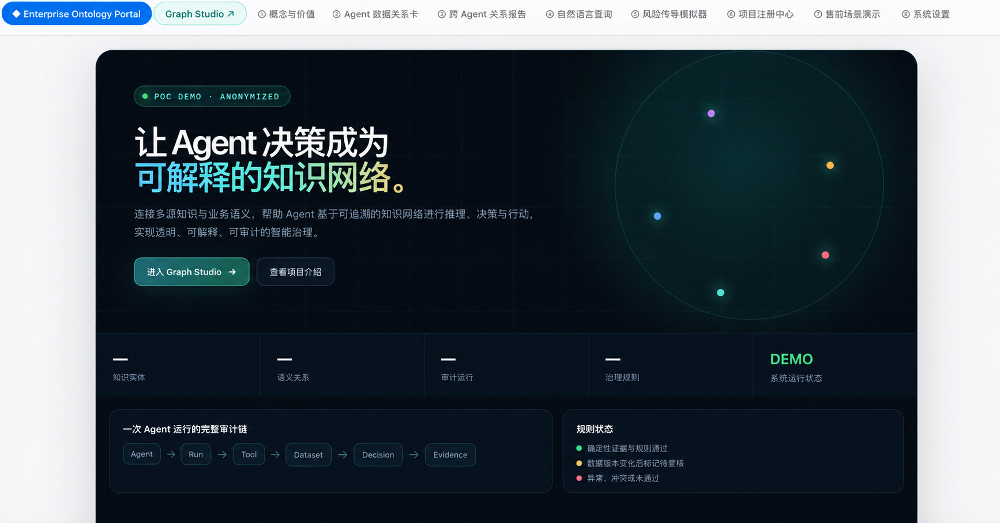

统一入口
把知识查询、业务分析和受控任务入口组织在同一产品体验中，而非让用户理解底层技术差异。
ANONYMISED CASE / METHOD FRAMEWORK
企业知识 · 业务语义 · 治理
让制度、流程、指标、业务对象与 AI 能力在同一套可治理的语义框架中被理解、检索与使用。
00 / POC DEMO / ANONYMISED
以下为脱敏 POC 界面，用于说明本体、运行审计与治理规则如何组织为一个产品体验；不代表客户生产系统、真实数据或系统规模。

01 / BUSINESS CHALLENGE
企业制度、流程、财务规则和专家经验分散在不同文档、系统与个人经验中。仅把它们向量化，无法解决指标口径不一、对象关系不清、访问越权或回答无法追溯的问题。
因此，知识平台不仅是问答入口，更需要明确哪些内容属于文档知识、哪些属于结构化事实、谁可以访问，以及 Agent 可以对哪些对象提出什么类型的建议。
02 / ARCHITECTURE BOUNDARIES
03 / PRODUCT APPROACH
把知识查询、业务分析和受控任务入口组织在同一产品体验中，而非让用户理解底层技术差异。
围绕业务对象、指标、规则与关系建立最小本体，控制概念、口径与跨系统映射。
在模型上下文构建前完成权限过滤，并保留引用、版本、执行痕迹和人工升级路径。
04 / MY ROLE
05 / BOUNDARY & EVIDENCE
本案例为匿名方法框架，不展示客户文档、知识库、业务对象、图谱数据、连接方式或权限配置。生产使用必须由企业身份体系注入用户身份，在每一次检索和工具调用前重新授权，并对高风险操作设置审批与审计。